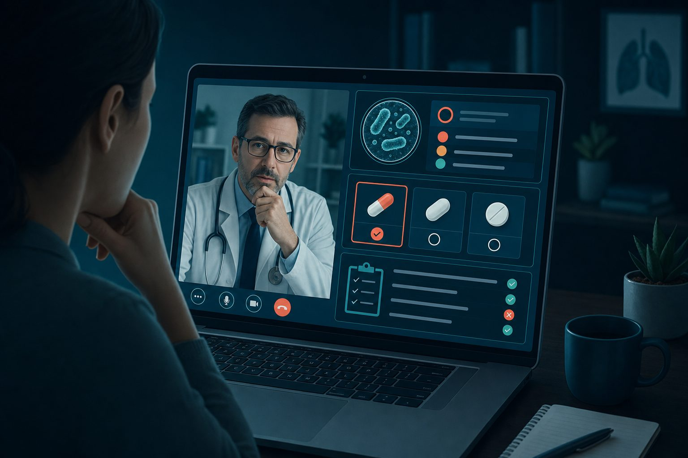
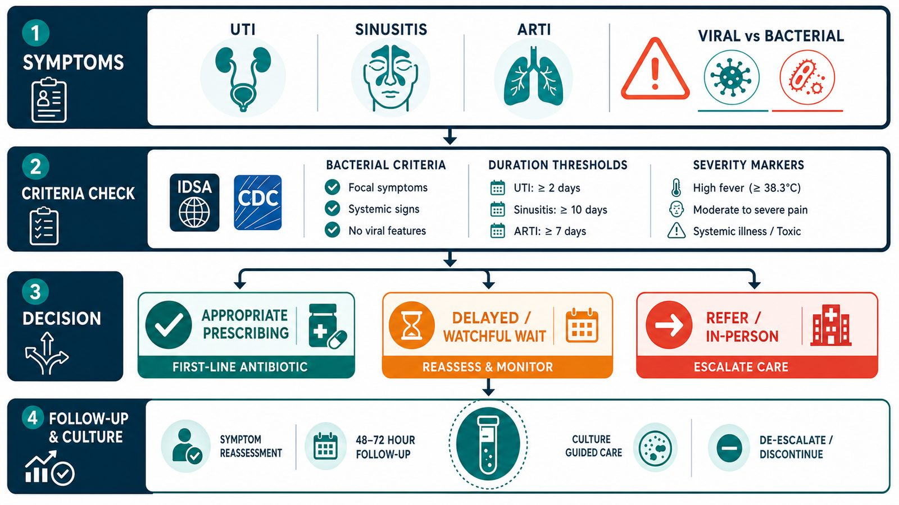

Key Takeaways
- In a claims study of a large insurer's direct-to-patient telehealth program, televisits had comparable antibiotic use for upper respiratory infections, bronchitis and sinusitis, but higher use for pharyngitis and uncomplicated UTI, and far less strep testing before antibiotics for pharyngitis.[2]
- For sinusitis, one primary care network found adults seen by virtual visit were less likely to receive antibiotics than those seen in the office (68.6% vs 94.3%), with similar guideline-concordant antibiotic selection.[3]
- Two systematic reviews found no uniform telehealth effect. Both found more prescribing for ear infections (otitis media) by telehealth; for sinusitis, one found less prescribing and the other no significant difference. Both called the evidence limited or highly heterogeneous.[4][5]
- The setting of a virtual visit matters: among children with respiratory infections, telemedicine visits with primary care practices involved antibiotics less often than visits with direct-to-consumer telemedicine companies (28.9% vs 37.2%).[14]
- Two common stewardship risks in any setting are treating asymptomatic bacteriuria, which IDSA recommends against screening for or treating in healthy non-pregnant women,[9] and prescribing for sinusitis that does not meet the IDSA criteria for bacterial infection.[8]
- Implementing CDC's Core Elements of Outpatient Antibiotic Stewardship in Veterans Health Administration emergency departments and primary care clinics was associated with lower antibiotic prescribing for respiratory infections; that study was not of telehealth.[7] In 2026, CDC updated the Core Elements and published stewardship strategies for outpatient telemedicine.[16][17]

Stewardship Pressure on Telehealth
Antibiotic resistance is a global public health threat.[1] According to CDC, at least 30% of outpatient antibiotic prescriptions in the United States are unnecessary.[15]
Against that backdrop, telehealth use in primary care has expanded rapidly since the COVID-19 pandemic, and reviewers have noted that this growth is outpacing knowledge about how to practice antibiotic stewardship in virtual care.[1] Whether telehealth prescribes antibiotics appropriately is therefore not an academic question. It carries real public health weight.
Early concerns were understandable. Telehealth brings limited physical examination and changes to the patient-physician relationship.[1] An early claims study of a large direct-to-consumer telemedicine company found overall antibiotic prescribing for adult respiratory infections similar to physician offices (58% vs 55%), but when antibiotics were prescribed, broad-spectrum agents were used far more often (86% vs 56%).[11] Among children with respiratory infections, antibiotics were prescribed at 52% of direct-to-consumer telemedicine visits, compared with 42% of urgent care and 31% of primary care visits.[12] Those findings prompted a closer look at the evidence, and at what separates high-quality telehealth stewardship from low-quality prescribing at a distance.
The picture that has emerged over the past several years is more varied, and more instructive, than either critics or advocates of telehealth predicted.
What the Evidence Shows on Telehealth Antibiotic Prescribing
Three categories of evidence now inform the stewardship conversation in telehealth: direct program evaluations, condition-specific comparisons, and systematic reviews across multiple studies.
Quality of Prescribing in Large Telehealth Programs
Later and larger claims studies found a more mixed picture. Among adults with respiratory infections at 38,839 direct-to-consumer telemedicine visits, matched against primary care and urgent care visits, researchers found clinically similar rates of antibiotic use, broad-spectrum antibiotic use and guideline-concordant antibiotic management, but less appropriate strep testing and more follow-up visits after telemedicine.[13]
A 2022 observational study by Cuellar and colleagues analyzed 2,400,198 patient visits by adults aged 18 to 64 in a large national insurer's direct-to-patient televisit benefit.[2] After adjustment, televisits were associated with comparable rates of antibiotic use for upper respiratory infections, bronchitis and sinusitis relative to most other sites, but higher rates for pharyngitis and uncomplicated UTI. When antibiotics were prescribed, guideline concordance for antibiotic type and duration was comparable to several other settings. The clearest gap was testing: among patients with pharyngitis who received antibiotics, Group A strep testing was done at 2.1% of televisits versus 58.0% of primary care visits.[2]
The practical takeaway: telehealth quality in antibiotic prescribing cannot be generalized across conditions. A program can perform comparably for some respiratory complaints while prescribing more often for others, so condition-specific monitoring matters more than a single program-wide prescribing rate.
Sinusitis: Virtual Visits May Prescribe Less
One of the more striking findings in the stewardship literature comes from a 2019 retrospective cohort study by Johnson and colleagues of 350 adults diagnosed with sinusitis in a single primary care network.[3] Patients seen by virtual visit were more likely to receive a guideline-concordant diagnosis (69.1% vs 45.7%) and less likely to receive antibiotics (68.6% vs 94.3%) than patients seen in the office, and guideline-concordant antibiotic selection was similar (67.5% vs 64.8%). There was a tradeoff: virtual-visit patients were more likely to return for sinusitis within 24 hours (8% vs 1.7%) and within 30 days (14.9% vs 7.4%).[3]
Systematic Reviews: Condition and Context Determine Quality
Two systematic reviews and meta-analyses published in 2021 synthesized the broader literature.[4][5] Bakhit and colleagues identified 13 studies and found no consistent pattern when results were pooled by infection: six studies of sinusitis showed significantly less prescribing in telehealth consultations, two studies of acute otitis media showed a significant increase, and the authors concluded that effects vary by condition, with more increases than reductions, and that the evidence is insufficient for strong conclusions.[4] Suzuki and colleagues included 23 studies and found more frequent prescribing via telemedicine for otitis media (pooled OR 1.26) and pharyngitis (pooled OR 1.16), with no significant difference for sinusitis, upper respiratory infection or UTI, while cautioning that the studies were substantially heterogeneous.[5]
Context also matters. In a pediatric primary care network with active stewardship, including learning collaborative videoconferences and clinician-level prescribing dashboards, guideline-concordant antibiotic management for respiratory infections occurred in 92.5% of telemedicine visits compared with 90.7% of in-person office visits.[6] A 2024 national claims study of children found telemedicine integrated within primary care was associated with lower rates of antibiotic receipt than visits with direct-to-consumer telemedicine companies.[14]

Evidence Summary: Telehealth Antibiotic Prescribing by Condition
| Condition | Study / Source | N | Prescribing Rate or Concordance | Key Finding | Cite |
|---|---|---|---|---|---|
| Adult respiratory infections | Uscher-Pines et al. 2015 (DTC telemedicine company vs physician offices) | Claims, one public-employee health plan | Antibiotics at 58% vs 55% of visits | Overall rates similar; broad-spectrum share of prescriptions 86% vs 56% | [11] |
| Adult respiratory infections | Shi et al. 2018 (DTC telemedicine vs matched primary and urgent care) | 38,839 DTC visits | Clinically similar antibiotic use and guideline concordance | Less appropriate strep testing and more follow-up visits after DTC visits | [13] |
| URI, bronchitis, sinusitis, pharyngitis, UTI | Cuellar et al. 2022 (insurer direct-to-patient televisits) | 2,400,198 visits | Comparable antibiotic use for URI, bronchitis, sinusitis; higher for pharyngitis and uncomplicated UTI | Group A strep testing 2.1% of televisits vs 58.0% of primary care visits when antibiotics were given for pharyngitis | [2] |
| Sinusitis | Johnson et al. 2019 (virtual vs office, one primary care network) | 350 adults | Antibiotics 68.6% virtual vs 94.3% office | Guideline-concordant selection similar (67.5% vs 64.8%); more 24-hour revisits after virtual visits | [3] |
| Pediatric respiratory infections | Ray et al. 2019 (DTC telemedicine vs urgent care vs primary care) | 4,604 DTC visits | Antibiotics at 52% vs 42% vs 31% of visits | Guideline-concordant management lower at DTC visits (59% vs 67% vs 78%) | [12] |
| Pediatric respiratory infections | Ray et al. 2021 (pediatric primary care network) | 8,332 visits, 47 practices | Guideline-concordant management 92.5% telemedicine vs 90.7% in person | Achieved with active stewardship (learning collaboratives, clinician dashboards) | [6] |
| Pediatric respiratory infections | Wittman et al. 2024 (primary care telemedicine vs DTC companies) | 27,686 children | Antibiotic receipt 28.9% primary care vs 37.2% DTC | No difference in non-guideline-concordant management (20.2% vs 20.1%) | [14] |
| Mixed infections | Bakhit et al. 2021 (systematic review and meta-analysis) | 13 studies | No consistent pattern | Less prescribing for sinusitis, more for acute otitis media; insufficient evidence for strong conclusions | [4] |
| Mixed infections | Suzuki et al. 2021 (systematic review and meta-analysis) | 23 studies | Higher for otitis media (OR 1.26) and pharyngitis (OR 1.16) | No significant difference for sinusitis, URI or UTI; substantial heterogeneity | [5] |
| UTI (IT interventions) | Rangraz Jeddi et al. 2025 (systematic review) | 10 randomized and cluster randomized trials | Mixed effects | Four studies reduced overall prescribing and two improved appropriateness; no significant differences in patient outcomes | [10] |
Where Telehealth Stewardship Gets Hard
Acknowledging where telehealth has genuine structural disadvantages is part of honest stewardship. Two specific gaps show up repeatedly in the literature and in clinical practice.
Limited Point-of-Care Testing
In a clinic, a rapid strep test, a urine dipstick, or a nasal swab can redirect a clinical decision within minutes. CDC notes that in telemedicine, laboratory or point-of-care tests may not be available for conditions where diagnostic testing is indicated, and that some conditions, such as otitis media, require a physical examination that may not be available through telemedicine.[17] The strep testing gap in the large insurer study shows what this looks like in practice.[2] For some conditions the gap is smaller: CDC cites a primary care network study of uncomplicated UTI that found more appropriate prescribing among virtual visits than office visits.[17] For others, the absence of testing or examination creates real uncertainty about bacterial versus viral causes.
Risk of Over-Treating Non-Specific Urinary Symptoms
Asymptomatic bacteriuria means bacteria found in the urine of a person without urinary symptoms. The IDSA's 2019 guideline notes that antimicrobial treatment of asymptomatic bacteriuria has been recognized as an important contributor to inappropriate antimicrobial use, which promotes antimicrobial resistance.[9] It recommends against screening for or treating asymptomatic bacteriuria in healthy premenopausal non-pregnant women and healthy postmenopausal women, and recommends screening and treatment in pregnant women and before endoscopic urologic procedures associated with mucosal trauma.[9] The risk in telehealth is that a patient who reports vague urinary discomfort, submits a urine culture showing bacterial growth, and receives an antibiotic prescription may have had asymptomatic bacteriuria rather than a true infection.
The fix is structured history-taking that asks directly about urinary symptoms such as painful urination, frequency and urgency, so that a culture result is read alongside the symptoms rather than on its own. Nonspecific complaints without those features should trigger a more careful diagnostic conversation, not an automatic prescription.
Under-Applying ABRS Criteria for Sinusitis
IDSA's 2012 guideline for acute bacterial rhinosinusitis (ABRS) recommends any of three clinical presentations for identifying bacterial rather than viral rhinosinusitis: persistent symptoms lasting 10 or more days without any evidence of clinical improvement; severe symptoms, meaning high fever (39°C [102°F] or higher) with purulent nasal discharge or facial pain, lasting at least 3 to 4 consecutive days at the beginning of illness; or "double-sickening," in which new fever, headache or increased nasal discharge follows a typical viral upper respiratory infection that lasted 5 to 6 days and was initially improving.[8] Presentations that fit none of these patterns do not meet the guideline's criteria for bacterial sinusitis.
The stewardship failure in telehealth, as in in-person care, is prescribing for patients with 5 or 6 days of nasal congestion and pressure who haven't met any of those thresholds. A well-structured telehealth intake that explicitly asks about symptom duration and pattern can help apply these criteria consistently.
What Effective Telehealth Stewardship Looks Like
The good news from the evidence base is that telehealth stewardship is achievable when programs build the right infrastructure. The published guidance points to four practical pillars.
CDC Core Elements
CDC first published the Core Elements of Outpatient Antibiotic Stewardship in 2016 with four core elements: commitment, action for policy and practice, tracking and reporting, and education and expertise.[15] A 2022 review proposed applying these four elements to primary care delivered by telehealth.[1] In 2026, CDC updated the 2016 Core Elements, placing greater emphasis on the role health systems can play while continuing to highlight stewardship at the clinic and clinician level.[16] CDC's 2026 telemedicine strategies include formalizing a stewardship commitment, establishing standards for tele-diagnosis and treatment, adapting stewardship interventions to the virtual workflow, tracking and reporting prescribing metrics, and providing targeted clinician and patient education.[17]
The clearest outcome data come from in-person care. A quasi-experimental study by Madaras-Kelly and colleagues in Veterans Health Administration emergency departments and primary care clinics, published in Clinical Infectious Diseases in 2021, found antibiotic prescribing for uncomplicated respiratory infections fell from 59.7% to 41.5% at intervention sites, compared with 73.5% to 67.2% at control sites; implementation of the core elements was associated with reduced antibiotic prescribing and a reduction in hospitalizations.[7] That study was not conducted in telehealth.
Delayed Prescribing Strategies
For conditions that usually resolve without treatment, CDC describes delayed prescribing, in which the clinician gives a postdated prescription or instructions to fill it after a predetermined period, and watchful waiting, which means symptomatic relief with a clear plan for follow-up. CDC calls both evidence-based approaches.[15] Its 2026 telemedicine strategies list delayed prescribing or watchful waiting among the evidence-based strategies to embed in telehealth platforms.[17]
Clinical Decision Support and Structured Criteria
Decision support tools, such as symptom-duration checklists and guideline criteria embedded in the visit workflow, are one way to make criteria-based prescribing routine. CDC lists clinical decision support for upper respiratory tract infections among the strategies to embed in telehealth platforms.[17] The trial evidence is mixed. A 2025 systematic review of information technology interventions for UTI prescribing included ten randomized or cluster randomized trials: four reported significant reductions in overall antibiotic prescribing, two showed significant increases in antibiotic appropriateness, and patient outcomes, usually secondary endpoints, showed no statistically significant differences.[10] A telehealth platform that prompts clinicians to confirm IDSA criteria before generating a prescription creates an audit trail and a structural guardrail at the same time.
Lab Pathways and Structured Follow-Up
When testing is indicated but cannot be done during a video visit, CDC recommends incorporating referral pathways and triage systems to in-person evaluation.[17] The key is building that step, and review of any test results, into the telehealth workflow rather than leaving it to the patient to initiate.
What This Means for Patients and Clinicians
The evidence does not support the view that telehealth is inherently reckless with antibiotics, nor the view that it performs as well as any in-person clinic by default. Both channels have strengths and gaps.
For conditions with well-defined clinical criteria that can be assessed by symptom history, such as sinusitis, telehealth can match or improve on in-person prescribing in some settings.[3] The UTI evidence is mixed: one primary care network found more appropriate prescribing among virtual visits for uncomplicated UTI,[17] while the large insurer study found higher antibiotic use for uncomplicated UTI at televisits.[2] Structured intake and guideline-embedded decision support are how a program closes that gap.
For conditions where testing is important to distinguish bacterial from viral causes, in-person care retains an advantage. A patient with 4 days of sore throat who is uncertain whether it is strep or viral benefits from a rapid strep test that a telehealth visit cannot provide, and televisits in one large program rarely included strep testing before antibiotics.[2] The clinically appropriate response in that case may be to direct the patient to an in-person visit or urgent care for testing before any antibiotic decision is made.
Appropriate triage, meaning deciding which conditions are suited to virtual evaluation and which require in-person workup, matters more than the care channel itself. A patient who calls a telehealth service for a possible strep throat and is appropriately directed to in-person testing, then treated based on a confirmed positive result, has received better stewardship care than one who receives an empiric antibiotic from an in-person clinic without confirmatory testing.
Both telehealth and in-person clinicians make antibiotic decisions. The quality of those decisions depends on clinical training, structured criteria, and the willingness to say "we need more information," not on which side of a screen the clinician sits.
Published evidence through 2026 shows that telehealth antibiotic prescribing quality varies by condition and by setting. It is not a fixed property of the care channel. Strong programs use structured intake, clinical decision support, delayed prescribing where appropriate, referral pathways for testing, and active tracking. Programs that skip established criteria risk more prescribing than patients need. The difference between those two outcomes is not telehealth versus in-person. It is whether effective stewardship infrastructure exists.
Frequently Asked Questions
It depends on the condition and the setting. For sinusitis, one primary care network found virtual visits were associated with less antibiotic prescribing than office visits. Systematic reviews have found more telehealth prescribing for ear infections and, in one review, for sore throat (pharyngitis), with no consistent overall pattern. A large insurer study found comparable antibiotic use for several respiratory infections but higher use for pharyngitis and uncomplicated UTI. Among children, telemedicine visits with primary care practices involved antibiotics less often than visits with direct-to-consumer telemedicine companies. CDC's 2026 telemedicine strategies recommend embedding clinical decision support, delayed prescribing or watchful waiting, and prescribing tracking into telehealth care.
The main challenges are limited testing and limited physical examination. CDC notes that laboratory or point-of-care tests may not be available during telemedicine for conditions where testing is indicated, and that some conditions, such as ear infections, require a physical examination that may not be available by video. In one large insurer's direct-to-patient program, patients with pharyngitis who received antibiotics after a televisit were tested for strep far less often than after primary care visits. CDC's strategies for telemedicine include clinical decision support, delayed prescribing or watchful waiting, and referral pathways to in-person evaluation when testing or examination is needed.
The IDSA guideline identifies acute bacterial rhinosinusitis by any of three patterns: symptoms lasting 10 or more days without any improvement; severe symptoms, meaning high fever (39°C [102°F] or higher) with purulent nasal discharge or facial pain, for at least 3 to 4 consecutive days at the start of the illness; or a double-sickening pattern, in which new fever, headache or more nasal discharge follows a cold that lasted 5 to 6 days and was initially improving. A telehealth physician can apply these criteria through a structured symptom history. Symptoms that fit none of these patterns do not meet the guideline's criteria for bacterial sinusitis, whether the visit is by video or in person.
CDC's Core Elements of Outpatient Antibiotic Stewardship, first published in 2016, named four core elements: commitment, action for policy and practice, tracking and reporting, and education and expertise. In practice that means committing to better prescribing, putting at least one policy or practice in place, tracking prescribing and reporting it back to clinicians, and providing education and access to stewardship expertise. In 2026, CDC updated the Core Elements with greater emphasis on the role of health systems and published stewardship strategies for outpatient telemedicine. A study published in Clinical Infectious Diseases in 2021, conducted in Veterans Health Administration emergency departments and primary care clinics rather than telehealth, found that implementing the core elements was associated with reduced antibiotic prescribing for respiratory infections and a reduction in hospitalizations.
How to cite this guide
Bhavsar P. Antibiotic Stewardship in Telehealth: What the 2026 Evidence Shows. TeleDirectMD Health Guides. Last reviewed June 2026. https://teledirectmd.com/health-guides/antibiotic-stewardship-telehealth-2026-evidence/
References
- Sine K, Appaneal H, Dosa D, LaPlante KL. "Antimicrobial Prescribing in the Telehealth Setting: Framework for Stewardship During a Period of Rapid Acceleration Within Primary Care." Clinical Infectious Diseases. 2022;75(12):2260-2265. Review. pmc.ncbi.nlm.nih.gov/articles/PMC9384578/
- Cuellar A, Pomeroy JML, Burla S, Jena AB. "Quality of Antibiotic Prescribing in a Large Direct-to-Patient Telehealth Program: an Observational Study." Journal of General Internal Medicine. 2022;37(12):3202-3204. pmc.ncbi.nlm.nih.gov/articles/PMC8769091/
- Johnson KM, Dumkow LE, Burns KW, Yee MA, Egwuatu NE. "Comparison of Diagnosis and Prescribing Practices Between Virtual Visits and Office Visits for Adults Diagnosed With Sinusitis Within a Primary Care Network." Open Forum Infectious Diseases. 2019;6(9):ofz393. pmc.ncbi.nlm.nih.gov/articles/PMC6778270/
- Bakhit M, Baillie E, Krzyzaniak N, van Driel M, Clark J, Glasziou P, Del Mar C. "Antibiotic prescribing for acute infections in synchronous telehealth consultations: a systematic review and meta-analysis." BJGP Open. 2021;5(6). pmc.ncbi.nlm.nih.gov/articles/PMC9447298/
- Suzuki H, Marra AR, Hasegawa S, et al. "Outpatient antibiotic prescribing for common infections via telemedicine versus face-to-face visits: Systematic literature review and meta-analysis." Antimicrobial Stewardship & Healthcare Epidemiology. 2021;1(1):e24. pmc.ncbi.nlm.nih.gov/articles/PMC9495625/
- Ray KN, Martin JM, Wolfson D, et al. "Antibiotic Prescribing for Acute Respiratory Tract Infections During Telemedicine Visits Within a Pediatric Primary Care Network." Academic Pediatrics. 2021;21(7):1239-1243. pubmed.ncbi.nlm.nih.gov/33741531/
- Madaras-Kelly K, Hostler C, Townsend M, et al. "Impact of Implementation of the Core Elements of Outpatient Antibiotic Stewardship Within Veterans Health Administration Emergency Departments and Primary Care Clinics on Antibiotic Prescribing and Patient Outcomes." Clinical Infectious Diseases. 2021;73(5):e1126-e1134. pubmed.ncbi.nlm.nih.gov/33289028/
- Chow AW, Benninger MS, Brook I, et al. "IDSA Clinical Practice Guideline for Acute Bacterial Rhinosinusitis in Children and Adults." Clinical Infectious Diseases. 2012;54(8):e72-e112. academic.oup.com/cid/article/54/8/e72/367144
- Nicolle LE, Gupta K, Bradley SF, et al. "Clinical Practice Guideline for the Management of Asymptomatic Bacteriuria: 2019 Update by the Infectious Diseases Society of America." Clinical Infectious Diseases. 2019;68(10):e83-e110. pubmed.ncbi.nlm.nih.gov/30895288/
- Rangraz Jeddi F, Nabovati E, Sharif R, Sharif AS, Anvari S. "The effects of information technology interventions for optimizing antibiotic prescribing in urinary tract infections: a systematic review." BMC Infectious Diseases. 2025;25(1):1752. pmc.ncbi.nlm.nih.gov/articles/PMC12751869/
- Uscher-Pines L, Mulcahy A, Cowling D, Hunter G, Burns R, Mehrotra A. "Antibiotic Prescribing for Acute Respiratory Infections in Direct-to-Consumer Telemedicine Visits." JAMA Internal Medicine. 2015;175(7):1234-1235. pubmed.ncbi.nlm.nih.gov/26011763/
- Ray KN, Shi Z, Gidengil CA, Poon SJ, Uscher-Pines L, Mehrotra A. "Antibiotic Prescribing During Pediatric Direct-to-Consumer Telemedicine Visits." Pediatrics. 2019;143(5). pubmed.ncbi.nlm.nih.gov/30962253/
- Shi Z, Mehrotra A, Gidengil CA, Poon SJ, Uscher-Pines L, Ray KN. "Quality Of Care For Acute Respiratory Infections During Direct-To-Consumer Telemedicine Visits For Adults." Health Affairs. 2018;37(12):2014-2023. pubmed.ncbi.nlm.nih.gov/30633682/
- Wittman SR, Hoberman A, Mehrotra A, Sabik LM, Yabes JG, Ray KN. "Antibiotic Receipt for Pediatric Telemedicine Visits With Primary Care vs Direct-to-Consumer Vendors." JAMA Network Open. 2024;7(3):e242359. pubmed.ncbi.nlm.nih.gov/38483387/
- Sanchez GV, Fleming-Dutra KE, Roberts RM, Hicks LA. "Core Elements of Outpatient Antibiotic Stewardship." MMWR Recommendations and Reports. 2016;65(RR-6):1-12. cdc.gov/mmwr/volumes/65/rr/rr6506a1.htm
- Centers for Disease Control and Prevention. "Core Elements of Outpatient Antibiotic Stewardship" (2026 update of the 2016 Core Elements). Page reviewed July 6, 2026. Accessed November 15, 2026. cdc.gov/antibiotic-use/hcp/core-elements/outpatient-antibiotic-stewardship.html
- Centers for Disease Control and Prevention. "Antibiotic Stewardship Strategies: Outpatient Telemedicine Settings." July 1, 2026. Accessed November 15, 2026. cdc.gov (PDF)